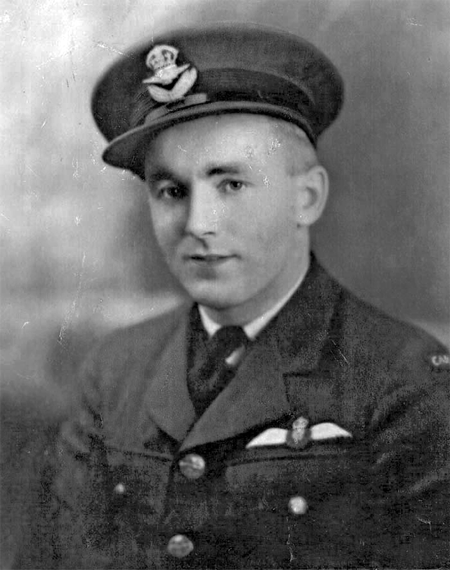
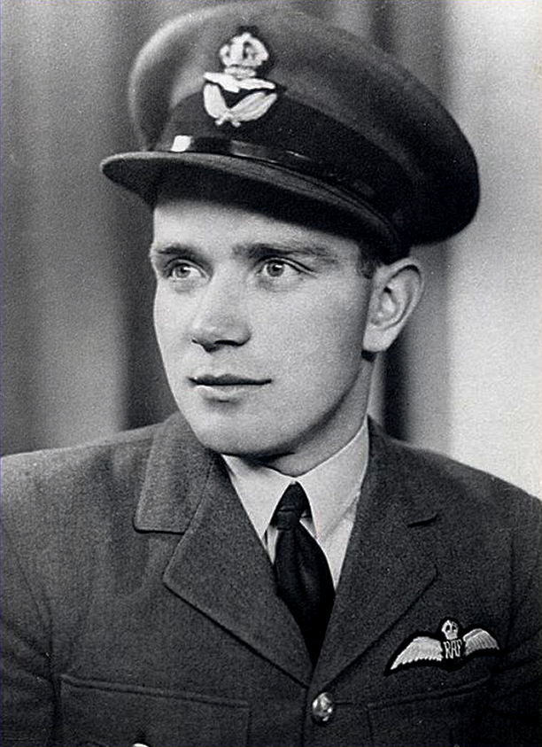
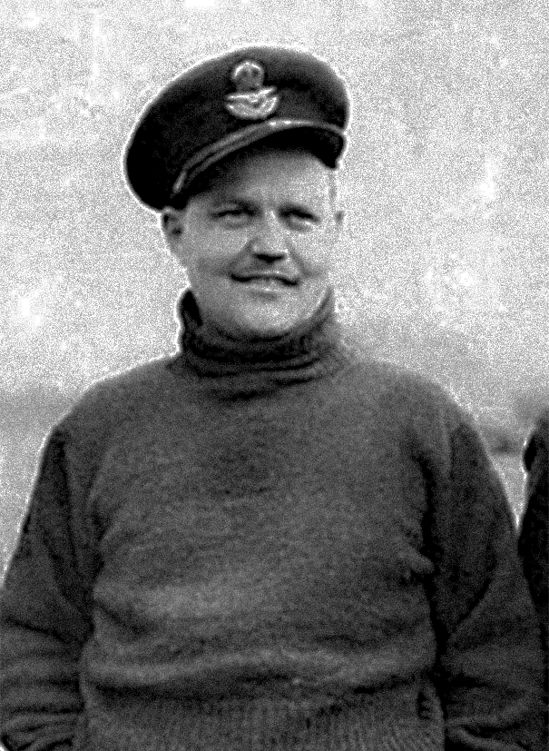
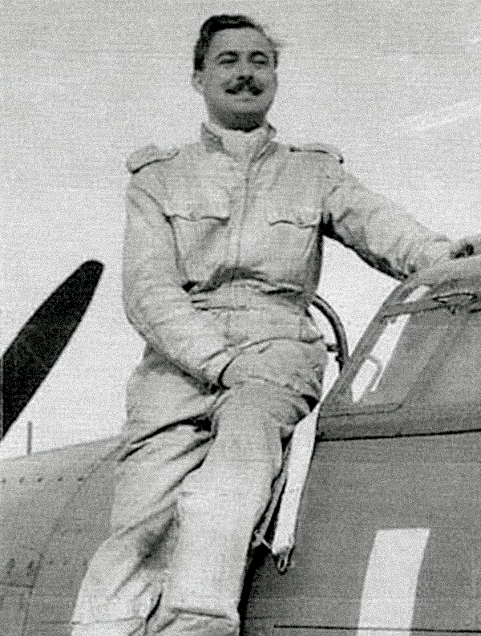
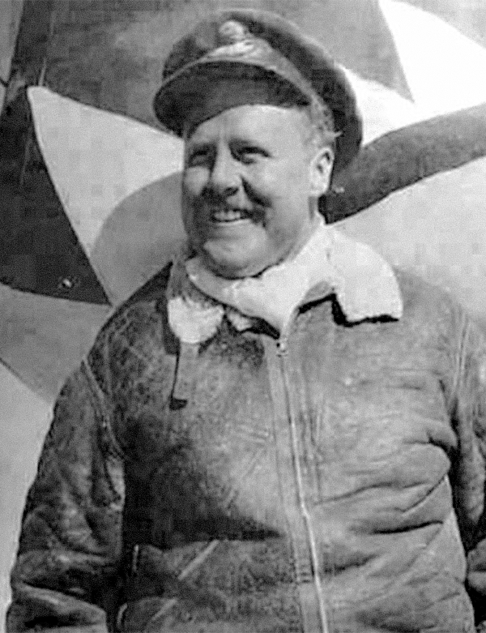

The Battle of Britain Page
THE BATTLE OF BRITAIN
"...the Battle of France is over. I expect that the Battle of Britain is about to begin...The whole fury and might of the enemy must very soon be turned on us.
Let us therefore brace ourselves to our duties, and so bear ourselves that if the British Empire and its Commonwealth last for a thousand years, men will still say, 'This was their finest hour.' "
Winston Churchill, in the House of Commons, June 18, 1940
JULY
The Battle of Britain (July 10 - October 31, 1940) The Battle of Britain was the first major military campaign fought entirely in the air. Over 82 days, the Royal Air Force defended the skies over southern England against sustained attacks by the German Luftwaffe. Germany's objective was to gain air superiority in preparation for Operation Sea Lion, the planned invasion of Britain. Despite being outnumbered, RAF Fighter Command successfully resisted the assault, preventing invasion and marking a major turning point in World War II. “Never in the field of human conflict was so much owed by so many to so few.” — Winston Churchill, House of Commons, August 15, 1940
Phase 1 — Channel Battles (July to early August) German attacks focused on shipping convoys and fighter sweeps over southern England to disrupt supplies and draw RAF fighters into combat.
July 10, 1940 Recognized as the start of the Battle of Britain. The Luftwaffe launched major attacks on English Channel shipping convoys. Over 100 aircraft clashed in large air battles over Dover.
AUGUST
Phase 2 — Airfields & Radar (Mid-August) Luftwaffe targeted radar stations and RAF airfields to cripple Fighter Command. This was the most dangerous period for the RAF.
August 12, 1940 First focused German attacks on Britain’s coastal radar stations. Most installations remained operational. August 13, 1940 — Adler Tag (Eagle Day) Large-scale attacks targeted RAF airfields. Germany lost 39 aircraft and 66 men, while Britain lost 15 aircraft and 4 pilots. August 15, 1940 The Luftwaffe launched its most widespread assault, attacking airfields and factories across southern and northeastern England. Nearly 1,800 German sorties were flown. Despite heavy damage, RAF Fighter Command remained operational. August 18, 1940 — The Hardest Day Over 850 German sorties were flown. Intense air battles involved up to 300 aircraft at once. Despite heavy attacks, no RAF sector stations were destroyed.
SEPTEMBER
Phase 3 — London Blitz (From September 7) Attacks shifted to London and major cities. Daylight raids were combined with heavy night bombing, reducing pressure on RAF airfields.
September 7, 1940 — Start of the London Blitz Nearly 1,000 German aircraft attacked London’s docks and East End. Over 400 civilians were killed. Attacks on RAF airfields decreased, allowing squadrons time to recover. September 15, 1940 — Battle of Britain Day Two massive German attacks were repelled over London. Losses were so severe that Germany’s belief the RAF was near collapse was proven wrong. Plans for invasion were postponed indefinitely.
OCTOBER
Phase 4 — Night Bombing Campaign (Late September onward) After invasion plans were cancelled, Germany focused mainly on night raids, with fewer daytime operations.
October 31, 1940 Later designated as the official end of the Battle of Britain. German forces failed to achieve air superiority.
WHY THE BATTLE MATTERED Germany needed control of the skies before launching a ground invasion of Britain. Achieving air superiority would have allowed German forces to cross the English Channel safely. When the Luftwaffe failed to destroy RAF Fighter Command, invasion plans were postponed and eventually abandoned. This victory was not only due to pilots in the air, but also to radar operators, ground crews, controllers, engineers, and commanders who coordinated Britain’s air defence network.
Cumulative Battle of Britain Losses
(July–October 1940)
RAF FIGHTER COMMAND:
RAF Fighter Command: 544 pilots killed 422 wounded 1,547 aircraft destroyed
Luftwaffe:
2,698 aircrew killed 1,887 aircraft lost Foreign pilots in RAF service: 595 non-British pilots flew in the Battle, including: 145 from Poland 127 from New Zealand
112 from Canada 88 from Czechoslovakia 32 from Australia 28 from Belgium 25 from South Africa 13 from France 10 from Ireland 7 from United States 1 each from Jamaica, Palestine, and Rhodesia
“The gratitude of every home in our Island, in our Empire, and indeed throughout the world, except in the abodes of the guilty, goes out to the British airmen who, undaunted by odds, unwearied in their constant challenge and mortal danger, are turning the tide of world war by their prowess and by their devotion. Never in the field of human conflict was so much owed by so many to so few.”
Prime Minister Churchill in the House of Commons, August 15, 1940
Of the nearly 3000 names on the Battle of Britain monument, 112 are those of Canadians. Among them are five airmen from this region. Many other Canadians had a part in the battle as well including ground crew and nurses.
FLYING OFFICER ROSS SMITHER

Born London, Nov. 12, 1912.
Smither served two years in the militia before joining the RCAF as a fitter. He later qualified as an air gunner before applying to enter a pilot's course. He was serving with No. 1 (RCAF) Squadron when it arrived in the UK on June 21, 1940. Smither claimed a Me109 damaged on August 31st and a Me110 destroyed and another damaged on September 4th. He was shot down and killed by Me109s over Tunbridge Wells on September 15th, in Hurricane P3876. He is buried in Brookwood Military Cemetery.
PILOT OFFICER HUGH REILLEY

Born London, May 26, 1918.
After finishing his schooling in 1938 he worked at the Highland Golf Club and the London Winery before leaving for England in May 1939 with a friend to enlist in the RAF. He was awarded a short service commission (five years) qualifying in August, 1940. Conversion to Spitfires at 7 OTU Hawarden was followed by a posting to 64 Squadron at Leconfield in early September. His last move was on September 15th to 66 Squadron at Gravesend. On September 27th, he claimed a Me109 destroyed and this was confirmed. He was shot down near Crockham Hill, Sevenoaks, on October 17th, flying Spitfire R6800 and died in the ensuing crash. He is buried in Gravesend Cemetery.
FLYING OFFICER ROBERT GRASSICK

Born London, May 22, 1917.
He joined the RAF on a short service commission in November, 1938. Following training, he joined 242 Squadron, then reforming at Church Fenton, on November 5th, 1939. Grassick went to France on May 14th, 1940, on attachment to 607 Squadron. Whilst in France he destroyed two Me109's and a Ju88 on 15th and 16th May. He destroyed two Me109's over Dunkirk. 242 was posted to France on the 8th of June to reinforce 1, 73 and 501 Squadrons and returned on the 16th. While no actions from the Battle of Britain period appear in his record, Ted Barris mentions him while describing the action the men from 242 Squadron saw in France: “During the climax of the Dunkirk air battle, Stan Turner shot down two more enemy fighters. His fellow No. 242 P/O’s Robert Grassick, Willie McKnight and John Latta also turned in remarkable combat records. Grassick chased and fired at an Me109 until it crashed and then claimed a second enemy fighter.” He survived the war.
PILOT OFFICER NEIL CAMPBELL

Born St. Thomas, June 24, 1916.
AIn 1938 Campbell began flying at the London, Ontario Flying Club and obtained his civil pilot’s licence. He applied for a short service commission in the RAF in late 1938. Following training, he was posted to 32 Squadron at Wittering, arriving on May 24th. On June 3rd, he moved to 242 Squadron at Biggin Hill. Five days later he flew to France with the squadron; to help cover the rearguard actions being fought by the British Army as it retreated to the Atlantic coast. By mid-July, 242 was operational again and on September 15th, Campbell damaged a Do17 and on the 18th he claimed two Ju88s destroyed, shared in shooting down another, and damaged a fourth. On 17th October 1940 Campbell was in Hurricane V6575 which crashed into the sea after possibly being hit by return fire from a Do17 engaged off Yarmouth. His body was later recovered, and buried on October 31st in Scottow Cemetery, Norfolk.
FLYING OFFICER ROBERT R. SMITH, DFC

Born London, August 17, 1915.
Smith joined the RAF on a short service commission in May, 1938. He joined 229 Squadron when it was reformed at Digby on October 6th, 1939. Over Dunkirk, on May 29th, 1940, Smith probably destroyed a Me109 and, on June 1st, one Ju87 and probably a second. On September 11th, he claimed a He111 probably destroyed. On the 15th, he was shot down in an attack on Do17s and Me110s over Sevenoaks and baled out, with leg wounds, from Hurricane V6616. On this day he damaged a Me109. Smith later flew a Kittyhawk with 112 Squadron in the Western Desert campaign in North Africa where he was shot down, becoming a Prisoner of War. He survived the war.